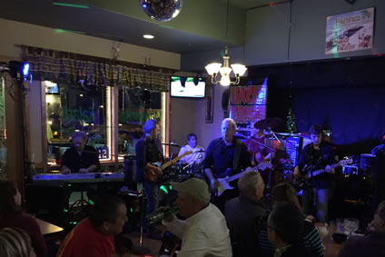

Drinks
All drinks at Arturo's are hand crafted with the finest ingredients. We take great pride in our spirits collection, including an excellent selection of high quality tequilas. Our drink menu includes all the classics, such as:
- Margaritas
- Piña Coladas
- Mojitos
- Bloody Mary's
- Martinis
Our bartenders are also happy to make you any cocktail you desire. Be sure to join us for
happy hour everyday from 3:00pm to 6:00pm. Remember that when you're visiting Arturo's, you're family!